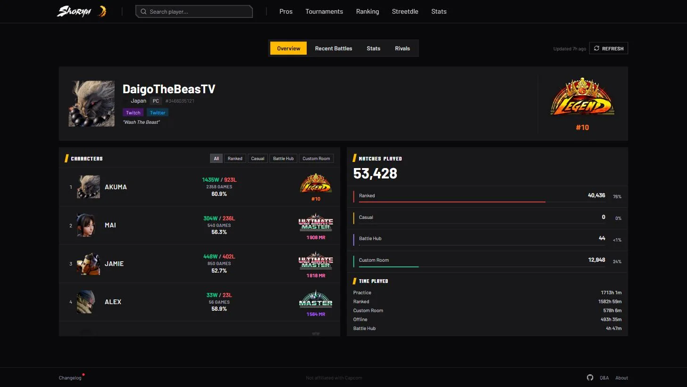
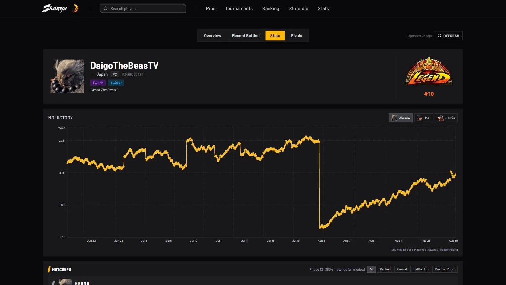
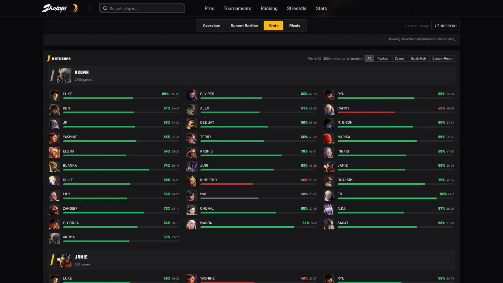
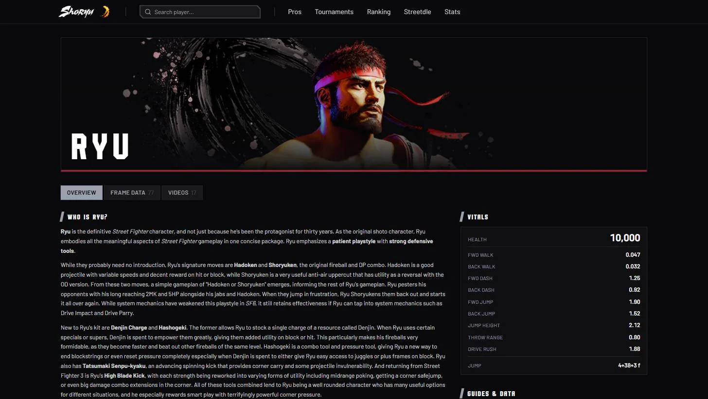
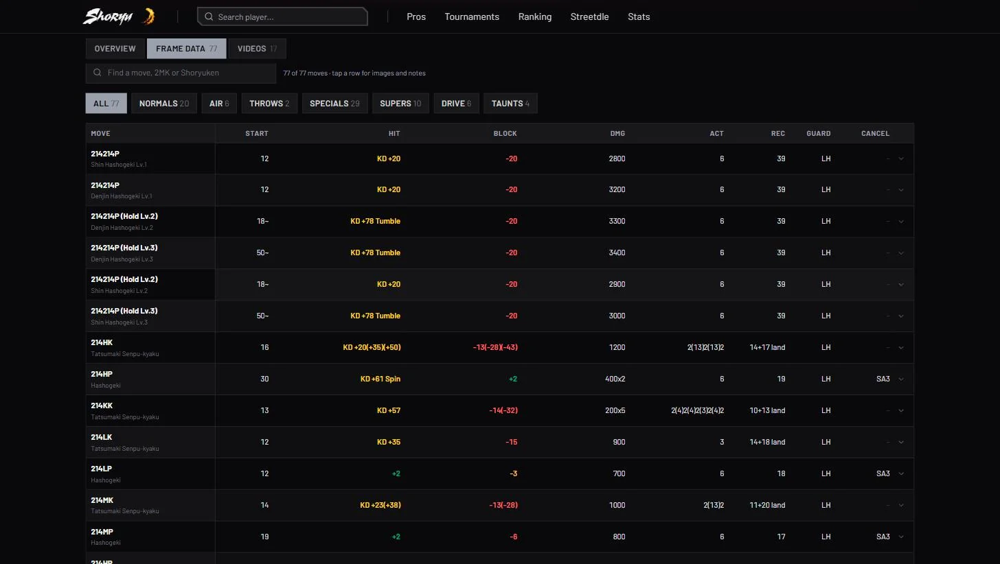
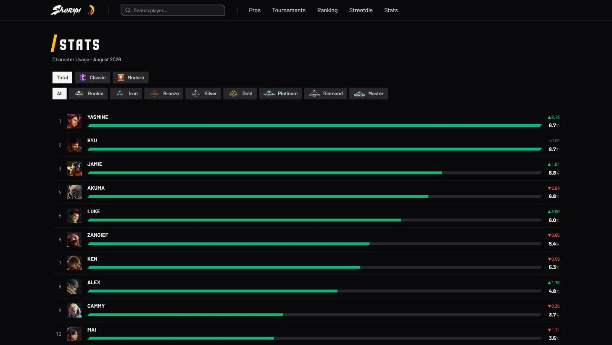
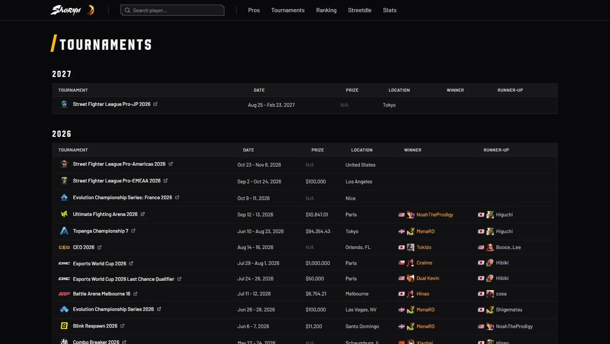

02Shoryu
Les stats Street Fighter 6 que le site officiel ne montre pas bien : profils joueurs, classements, matchups et fiches personnages. The Street Fighter 6 stats the official site doesn't show well: player profiles, rankings, matchups and character pages.
- Type
- App web, en ligneWeb app, live
- Stack
- Next.js 16, TypeScript, Tailwind, Supabase, Recharts
- StatutStatus
- En production, open source (MIT)In production, open source (MIT)
- LiensLinks
- shoryu.site · GitHub

Le problèmeThe problem
Capcom n'a pas d'API publique pour Street Fighter 6. Les données existent sur Buckler's Boot Camp, le site officiel, mais elles sont éparpillées et on n'y voit pas l'évolution d'un joueur dans le temps.
Capcom has no public API for Street Fighter 6. The data exists on Buckler's Boot Camp, the official site, but it's scattered and you can't see how a player evolves over time.
Profils joueursPlayer profiles
On cherche un pseudo CFN ou un ID et on tombe sur le profil : chaque personnage joué avec ses victoires, défaites et son rang, la répartition des matchs par mode et le temps de jeu. S'y ajoutent les derniers matchs et les rivaux.
Search a CFN name or ID and you land on the profile: every character played with its wins, losses and rank, matches split by mode and time played. Recent battles and rivals come on top.
L'onglet Stats trace l'historique MR ou LP de chaque personnage, et le taux de victoire contre chaque personnage adverse, filtrable par mode. C'est ce que Buckler ne montre pas.
The Stats tab plots the MR or LP history of each character, and the win rate against every opposing character, filterable by mode. That's what Buckler doesn't show.



PersonnagesCharacters
Chaque personnage a sa fiche : présentation, statistiques de base (vie, vitesses, portée de choppe) et sa frame data complète, cherchable et filtrable par type de coup. Les données viennent du wiki SuperCombo, régénérées par un script après chaque patch d'équilibrage.
Every character has a page: overview, base stats (health, speeds, throw range) and full frame data, searchable and filterable by move type. The data comes from the SuperCombo wiki, regenerated by a script after each balance patch.


Méta et tournoisMeta and tournaments
Les taux d'utilisation des personnages par rang, en contrôles Classic ou Modern, avec l'évolution sur un mois. Le haut du classement Master, les résultats des tournois avec gagnants et dotations, les profils des pros, et Streetdle, un jeu quotidien pour deviner un personnage.
Character usage rates per rank, in Classic or Modern controls, with the change over a month. The top of the Master ranking, tournament results with winners and prize pools, pro profiles, and Streetdle, a daily guess-the-character game.


Tout est pensé mobile d'abord et fonctionne dès 375 px de large.
Everything is mobile first and works from 375 px wide.
Choix techniquesTechnical choices
Lire ce que Buckler rend déjà. Plutôt que deviner des endpoints non documentés, Shoryu lit le JSON __NEXT_DATA__ embarqué dans les pages de Buckler, avec un cookie de session. Toutes les requêtes passent par une file qui les espace, pour ne jamais inonder le site de Capcom.
Read what Buckler already renders. Instead of guessing undocumented endpoints, Shoryu reads the __NEXT_DATA__ JSON embedded in Buckler's pages, with a session cookie. Every request goes through a pacing queue so Capcom's site never gets flooded.
Cacher pour limiter le trafic. Supabase garde les données et leur historique :
Cache to keep traffic low. Supabase stores the data and its history:
| ProfilsProfiles | À la visite, au plus toutes les 12 h, ou avec le bouton RefreshOn visit, at most every 12 h, or with the Refresh button |
| MatchsMatches | À la demande, stockés au fur et à mesureOn demand, stored incrementally |
| Classement, usageRanking, usage | Tâche planifiée toutes les 12 hScheduled job every 12 h |
| TournoisTournaments | Liquipedia, GitHub Action chaque semaineLiquipedia, weekly GitHub Action |
Next.js côté serveur. App Router et Server Components : les données sont récupérées sur le serveur, le cookie Buckler et la clé Supabase ne quittent jamais le back.
Server-side Next.js. App Router and Server Components: data is fetched on the server, so the Buckler cookie and the Supabase key never leave the back end.
LimitesLimits
Tout dépend d'un cookie de session Buckler qui expire régulièrement. Quand les profils reviennent vides, il faut en récupérer un nouveau à la main.
Everything depends on a Buckler session cookie that expires regularly. When profiles come back empty, a fresh one has to be grabbed by hand.